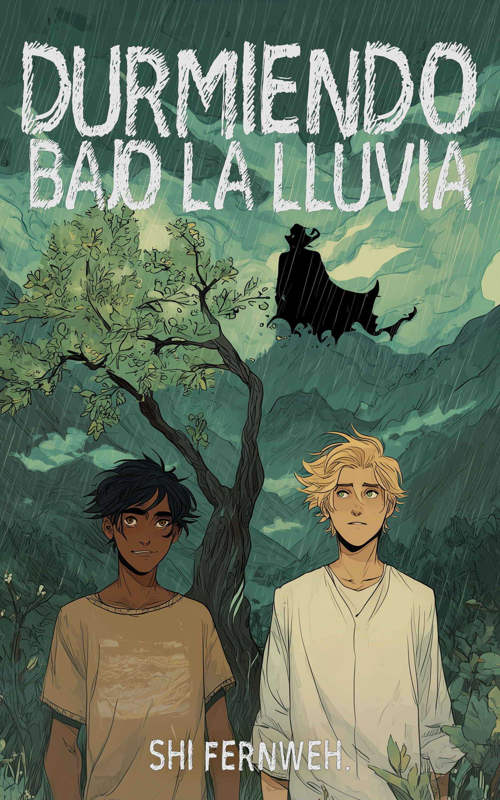

Durmiendo bajo la lluvia
"Es más fácil señalar al monstruo del bosque que admitir que la oscuridad vive dentro de sus propias casas"
En Santa Nita, el frío nunca había sido tan mortal. Nuno regresa al pueblo de su infancia convertido en el orgullo de su familia. Lo que debía ser un viaje de descanso se transforma rápidamente en una pesadilla al reencontrarse con las heridas abiertas de su mejor amigo, Tián. Marcado por la trágica muerte de Clara y aislado por una comunidad supersticiosa que lo culpa de todo, Tián es la sombra de quien fue. Pero Nuno pronto descubrirá que en este pueblo el pasado nunca se entierra del todo. Mientras las muertes inexplicables se multiplican y el miedo se extiende como una plaga, Nuno deberá navegar entre fiestas familiares, rumores venenosos y silencios incómodos para desenterrar una verdad atroz. ¿Hasta dónde estarías dispuesto a llegar para salvar a quien consideras tu hermano?

Capítulo 1: Rocío matutino
La vida no suele ser perfecta para nadie, aunque, a ojos de aquellos que viven sumidos en el sufrimiento, los que poseen bienes materiales puedan parecer potentados. Julio —o Nuno, como le decía— todo el mundo, transitaba los caminos que lo llevaban a su casa. Bueno, era la casa de sus padres, el lugar en el que nació y donde el resto de sus hermanos vivía. Pasaba las montañas y los cerros en el horizonte, preciosos a sus ojos, notando que el sol aún brillaba con fuerza, sabía que pronto comenzaría a caer, pues ya pasaban de las cuatro. —Espero que regresar a Santa Nita traiga cosas buenas —murmuró mientras tomaba una curva y veía la entrada del pueblo, la calle principal. La camioneta pasó por la ancha vía y contempló con gusto los comercios de siempre, dándose cuenta de que había uno que otro nuevo desde su última visita. Habían pasado cuatro años desde la última vez que estuvo aquí. Naturalmente, los pueblos cambiaban. Su casa estaba más o menos a mitad del poblado, y llegó hasta allí en menos de cinco minutos, consciente de las miradas de asombro de los pobladores al verlo llegar en esa «tremenda camionetota». —¡Ay! Si supieran. Resopló con fuerza y se detuvo frente a una propiedad de una sola planta con cercas color azul claro. Apagó el motor, tomó sus pertenencias, abrió la puerta, y en ese mismo momento la reja delantera de la casa se abrió. Apenas se bajó, su hermana se le fue encima. —¡Nunoooo! —gritó ella, apretándolo en un fuerte abrazo. —¡Danielaaa, me vas a tumbar! Ya estás muy grande para que te me lances encima. —La alegría de volver a ver a su hermanita se le escurrió en el tono. Ella tenía doce años, ¿pero en tamaño? ¡Qué va! Ya era todo un mujerón que le llegaba al pecho, y eso que él era bastante alto. —¡Ay, ay… verdad, verdad! Ya me quito. La muchacha lo soltó, y al bajar la vista a sus pies, el moreno notó que andaba descalza. Alzó la vista, sin poder dejar de notar su alborotada cabellera castaña oscura, color que compartían, y negó. —Eres muy descuidada. Una suave sonrisa pintó sus labios al ver a su madre salir y la abrazó; luego a su hermano Mateo, el menor, y por último a su padre. Se abrazaron formando una piña a su alrededor, y solo sentir el calor de su familia lo hizo relajarse. —¡Nuno, qué bueno verte! —saludó Evangelista, su padre, despegándose. Los demás se separaron, y una sonrisa se pintó en los labios arrugados del mayor. Su cabellera entrecana ondeó con el viento y su rostro cetrino brilló con orgullo hacia su muchacho. Caminó hacia él y, con la chispa en la mirada, lo atrajo hasta su pecho en un nuevo abrazo. —Papá, de verdad te extrañé mucho. Los extrañé a todos, muchísimo. —Mi muchachito, ¿por qué no nos dijiste que casi llegabas cuando te llamamos? Íbamos a recibirte afuera —comentó María, ataviada con un impecable delantal de cocina blanco. Nuno negó, y una sonrisa pícara curvó sus labios. —Es que quería sorprenderlos. —Giró hacia el carro—. Traje unos regalos para todos. Sé que es tarde, pero como no pude venir en navidad… —¡Regalooos! —gritó Daniela con entusiasmo y comenzó a brincar. Ella era la más pequeña de la familia, todavía una niña, por lo que los demás solo pudieron sonreír. —¡Mamá, temprano hablé con Roberto! Te dije, ¿no? —soltó Nuno de camino a la camioneta. Daniela comenzó a revolotear a su alrededor, emocionada, y Mateo, a pesar de tener quince años y querer hacerse el duro, se los quedó viendo a mitad de camino con ojos brillantes y expectantes. —Me dijiste, sí ¬¬—respondió su madre. —Pasé por su casa. Él ya empezó clases, así que no me lo pude traer, ¿pero no creen que está muy alto? Me va a pasar si sigue así —habló el muchacho, como una queja juguetona que hizo reír a sus padres. —Beto está comiendo como Dios manda y le va bien en las clases —asintió Evangelista con orgullo. Había criado muy buenos hijos. —Tiene veinte, ¡ya debería dejar de crecer! —chilló Julio con molestia fingida. Daniela se echó a reír y él la siguió. —Nuno, no te quejes tanto —dijo Mateo, deteniéndose a su lado mientras lo veía abrir el baúl—. Mírame a mí, tengo quince y todos se burlan porque soy muy bajito. Por reflejo, la diestra de Julio terminó sobre la cabeza de su hermano y le alborotó la mata de ásperos cabellos que se gastaba. —No, Teo, ya crecerás. Que te lo digo yo, que fui un pigmeo hasta cuarto año —animó y frunció los labios, palmeándole la cabeza. En consecuencia, se ganó unos ojos medio convencidos, medio «qué me dices» que lo hicieron resoplar. —Ahora ven, ayúdame a bajar estas maletas y las cajas. Los regalos están dentro. Mateo sonrió y comenzaron a descargar. —Mijo, ¿y cuánto tiempo te vas a quedar? —¿Te vas a quedar hasta carnaval, hasta Semana Santa? La primera en hablar fue María, la segunda una insistente Daniela. Ya habían pasado un par de horas y descargaron y acomodaron todo: un par de tabletas para los hermanos, ropa y zapatos para mamá y papá. —No, qué más quisiera yo que quedarme hasta Semana Santa, con lo que extraño las fiestas de aquí del pueblo —habló Julio con desgana. Estaba sentado en el sofá de la sala, con la cabeza hacia atrás y mirando al techo. —Tengo tres semanas de vacaciones, luego debo regresar y… espero que por lo menos sí me dejen libre en Navidad este año. Sonaba cansado, un tanto disgustado, y los demás lo notaron. Daniela y María se encontraban en la cocina, terminando de acomodar los pasapalos para la fiesta de bienvenida que tendría lugar más tarde. —¿Te sientes mal en el trabajo, mijo? —curioseó su papá, sentado en el sillón frente al televisor. —No. No es eso, papá. —Se acomodó en el mueble para ver al otro—. Es solo que estoy cansado, eso es todo. He trabajado mucho por mucho tiempo, y me perdí cosas importantes. —Exhaló—. Pero, ya sabes, en este país uno no puede solo abandonar su trabajo así sin más. Menos yo que sé que tengo uno bueno, aunque es tremendamente exigente. Evangelista asintió. —En eso tienes razón. Quizá si aguantas un poco más, la carga se aligere. —Eso espero. Andamos buscando personal también. Supongo que cuando se integren los nuevos me sentiré más libre. Con esta revolución tecnológica la explotación laboral no hizo más que evolucionar. —Ay, mijo. Lo bueno es que estás macizo, así que sé que comes bien a pesar de estar solito por allá. —¿Cuándo se supone que voy a tener nietos? —intervino María desde el fondo con su queja. Mateo soltó una carcajada, y Nuno no pudo más que resoplar y negar con la cabeza. —Caramba, mamaíta, si ni tiempo para conocer a nadie tengo. Pero ya vendrá. Usted verá que con el favor de Dios vendrá la persona indicada para mí, y el tiempo para poder conocerla bien. Soltó la risa y se echó hacia adelante, puso un codo sobre su muslo y se acomodó la camisa por detrás. —Así es, mijito, encomiéndese a papá Dios y a Santa Nita para que una buena mujer le llegue, y para que usted sea un buen hombre para ella. Sí. Así se suponía que debía ser. Julio trabajaba en la capital del país, era el jefe del Departamento de Aseguramiento de Calidad de Software de una empresa grande, una multinacional, y por eso siempre tenía mucho trabajo… y presión. Lo agarraron pichoncito, y a pesar de que hacía poco había terminado el posgrado que le alentaron a hacer, ya ocupaba una posición demandante. Quién hubiera dicho que ser ingeniero de sistemas se las iba a poner tan difícil. Aunque no se arrepentía de nada, porque le encantaba. —Nuno, tu tío Gilberto y tu tía Alejandra van a venir. Sé que estás cansado por el viaje, pero ayuda a Mateo y a Daniela a acomodar las sillas en el jardín, por favor —pidió María. Y él, como buen hijo que era, obedeció. Su casa era bonita, con cuatro cuartos, incluido el suyo propio al ser el mayor; pero lo que más le gustaba era el patio trasero. Salió allí y vio la planicie llena de gramita. Su familia tenía un terreno amplio donde más atrás sembraban para consumo propio, como casi todo el mundo allí; y al fondo, al final de la propiedad, se podían ver unos chaguaramos gigantes, cuyas ramas ondeaban al son que dictara la brisa. Su padre era profesor de matemáticas en un instituto de la ciudad vecina y su madre, como él y su papá ganaban un buen sueldo, daba tareas dirigidas a los niños del pueblo de lunes a viernes y catequesis los fines de semana. En perspectiva, había crecido en un buen hogar. Mientras sacaba y acomodaba las sillas, se enteró de que eran las seis de la tarde solo porque las campanas de la iglesia comenzaron a sonar. Su teléfono andaba por algún lugar de la casa porque, a fin de cuentas, estaba de vacaciones, y no tenía ganas de que lo llamaran de repente para solucionar nada. Aunque la señal era terrible, lo que era bueno por ahora, porque así no podrían localizarlo. Esto se debía a que Santa Nita era el pueblo más lejano de todos los de la zona central, aunque se encontraba muy cerca del río. Se hicieron la siete, y para ese momento ya se escuchaba la música medio alta y el jardín se hallaba lleno de gente que hacía mucho no veía. —No, Nuno, tienes que venir a mi restaurante. Tengo un sancocho de costilla y lagarto que está para que te mueras. Ese era Sergio, que hablaba emocionado, con su vaso de bebida espirituosa en mano, del restaurante que había abierto algunos meses atrás. Ambos fueron compañeros de primaria y liceo, hasta que llegó el momento de ir a la universidad. Todos aquí estaban felices de verlo, y él igual, porque, al pasar tanto tiempo fuera, volver al ambiente de tu pueblo, tu terruño, era lo mejor de lo mejor. Le relajaba solo saber que sus pies se arrastraban por esta tierra. Cansado por el viaje, y tras haber hablado hasta por los codos, se fue junto a su padre más entrada la noche, inquieto. —Papá, ¿qué pasó con Tián que no está aquí? Evangelista exhaló. Fue un resoplido raro, como desganado, como si ocultara algo, y eso tomó la atención del menor. —Ay, ¿qué te puedo decir? A Sebastián ya no se lo ve mucho por el pueblo desde lo de Clarita. —Lo llamé antes de venir, pero no me contestó. ¿Está bien? El mayor alzó la diestra y apretó el vaso que agarraba, antes de llevárselo a la boca y beber su contenido de un tirón. —Mijo, ese pobre muchacho ha pasado las de Caín desde lo de Clara. Ni siquiera lo dejaron vivir su dolor en paz. ... Continúa en el libro